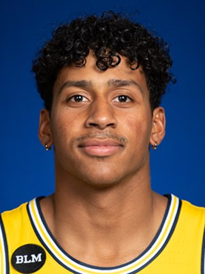
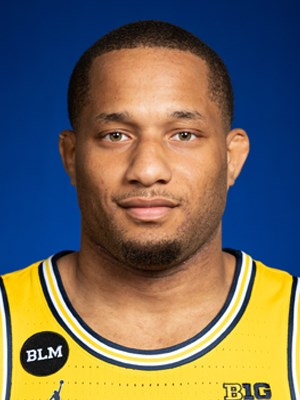
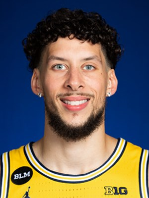
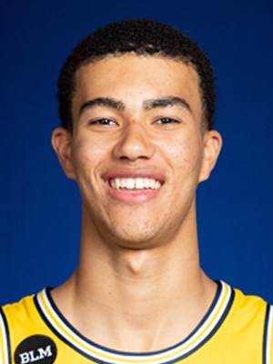
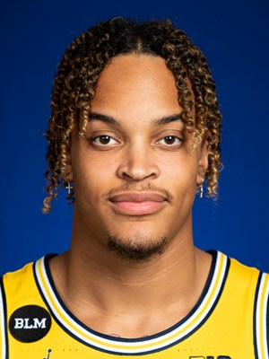
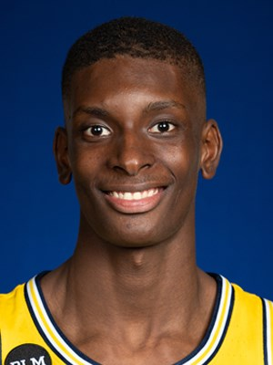
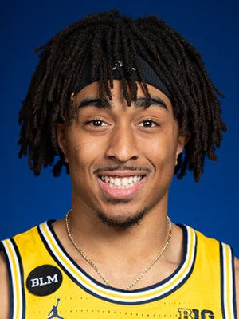
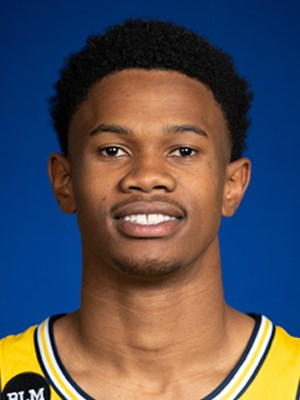

Michigan Basketball
Student-Athletes
ㅤ
Hunter Dickinson
Sophomore
Center, 7 foot 1 inch, 260 lbs
• A 7-1 center known for his rebounding prowess and occupying space
• Left-handed shooter with a nifty jump hook shot; multifaceted offensive skill set
• Patient player in the post, reading the defense before making a move
• Mentally tough player with a high, savvy basketball IQ and strong passing ability
ㅤ
ㅤ
Eli Brooks
Graduate
Guard, 6 foot 1 inch, 185 lbs
• Nicknamed "The Professor" by U-M head coach Juwan Howard
• Quick and aggressive guard who is a skilled shooter, especially from long range
• Strong basketball IQ and feel for the game, who is rarely in the wrong place on the floor
• Referred to as the fourth assistant coach with his knowledge of game
ㅤ
ㅤ
Devante Jones
Graduate
Guard, 6 foot 1 inch, 200 lbs
• Scoring guard and with ability to get to downhill
• Uses ball screens to his benefit, or to set up a teammate
• Strong, efficient and has good court awareness
• Utilizes the floater when getting to basket
ㅤ
ㅤ
Brandon Johns Jr
Senior
Forward, 6 foot 8 inches, 240 lbs
• Extremely athletic player, who can score in many ways
• Continues to grow with his game in all areas
• Ability to knock down mid- and long-range baskets
• Good defensive motor, working to improve consistency in rebounding physicality
ㅤ
ㅤ
Caleb Houstan
Freshman
Forward/Guard, 6 foot 8 inches, 205 lbs
• Good length with a tremendous shooting range with reliable handles and rebounding skills
• High basketball IQ; student of the game
• Highest rated recruit committed to Michigan since Glenn Robinson III (No. 18, 2012)
• As a youth attended Michigan Basketball Summer Camps
ㅤ
ㅤ
Terrance Williams II
Sophomore
Forward, 6 foot 7 inches, 230 lbs
• Versatile “hybrid” forward who can play inside and out
• Reliable rebounder who is known for consistent defensive efforts
• Efficient shooter with post moves as well as the ability to shoot from outside
• Physically tough and not afraid of contact; has a Big Ten frame
ㅤ
ㅤ
Moussa Diabate
Freshman
Forward, 6 foot 11 inches, 210 lbs
• Known for his high energy and aggressiveness on the court
• Possesses great length and has consistently grown as a defender with a wingspan of 7-3
• Takes pride in rebounding
• Developing ball-handling and outside jumper
ㅤ
ㅤ
Frankie Collins
Freshman
Guard, 6 foot 1 inch, 185 lbs
• Known for his ball handling skills and strong abilities to make passes and plays for his teammates
• Downhill attacker and beating defenders at the rim or finding open teammates
• Known for his play making ability and high basketball IQ
• Athletic and has a very high vertical and strong leaping ability
ㅤ
ㅤ
Zeb Jackson
Sophomore
Guard, 6 foot 5 inches, 190 lbs
• Deceptive and athletic guard with strong ball handling skills
• High basketball IQ and overall feel for the game
• Strong passer with ability to drive to the basket
• Strong outside shooting ability
ㅤ
ㅤ